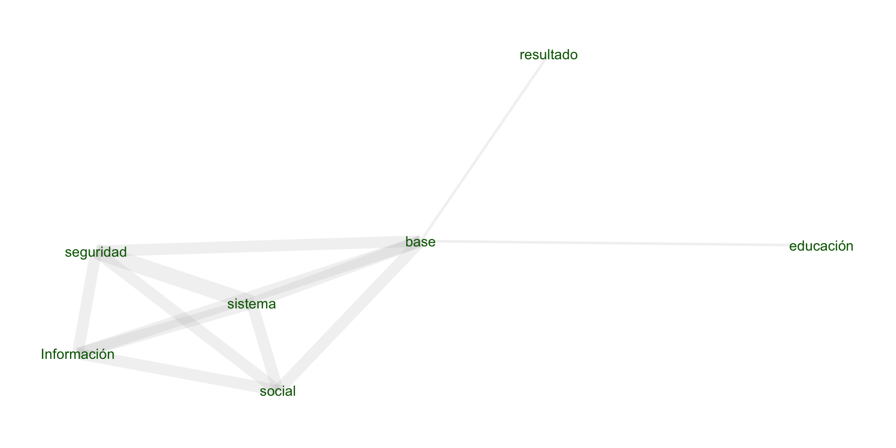

KLD/FHL
This presentation is part of the IDB Open Data Hub | Capital Project Proposal. The report presents an historical analysis of the behavior of visitors to data.iadb.org, including:
The largest online traffic source for data.iadb.org are redirections from the iadb.org mainpage or mydata.iadb.org urls, wirh more than 30% of the traffic. The second largest is Google, then IDB MOOCs.
Desktop represents the biggest category for accessing data.iadb.org with more than 80%. Then mobile and tablet users with less than 10% and 4% respectively.
Bounce Rate is defined as the percentage of visitors that leave a webpage without taking an action. Since 2017 onwards, the bounce rate has shown a positive trend, especially in 2022.
A session is a group of user interactions that take place within a given time frame. The number of sessions has been declining steadily since 2016 onwards.
The session duration measured in seconds has been in the range of 62 and 70 seconds throughout the period covered.
A new user is a visitor who has never been to your site before and is initiating their first session. The number of new users has been in decline since 2017 onwards.
Pageviews is the total number of pages viewed (an instance of a page being loaded (or reloaded) in a browser.) The total pageviews has also been declining throughout the period covered.
2021 is the year with most downloaded datasets, this correlates with the datasets’ date of publication. Most of which were in 2021. Meanwhile, both 2020 and 2022 have the Database of Political Institutions as their most downloaded dataset.
Both 2020 and 2021 show the most popular datasets, including flagship datasets such as Agrimonitor, SIMS, and others such as the Database of Political Institutions and DIA 2011.
Apart from the most popular datasets, individuals also visit other datasets within the IADB’s catalog.
Most searched terms included development, data and knowledge.
Topic modeling is a type of statistical modeling for discovering the abstract “topics” that occur in a collection of documents. To get a sense of the topics searched in data.iadb.org, we perform Latent Dirichlet Allocation (LDA) to classify search terms in three groups:
